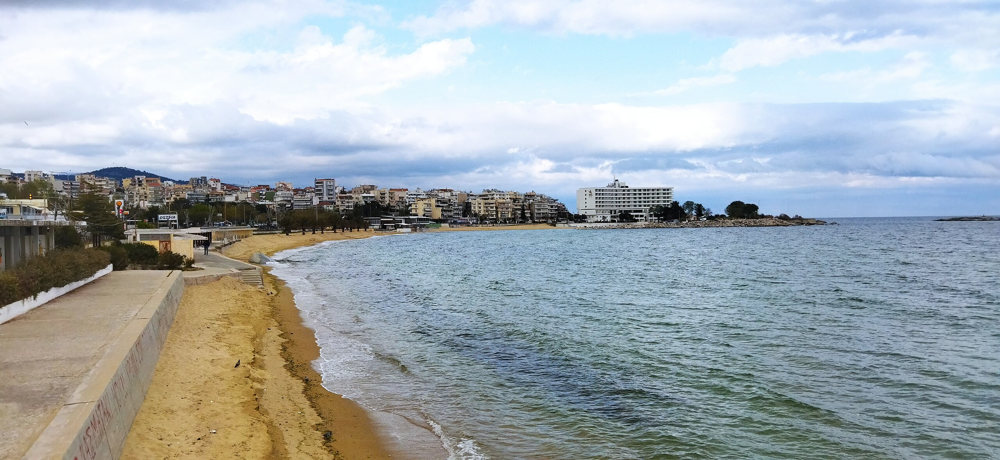
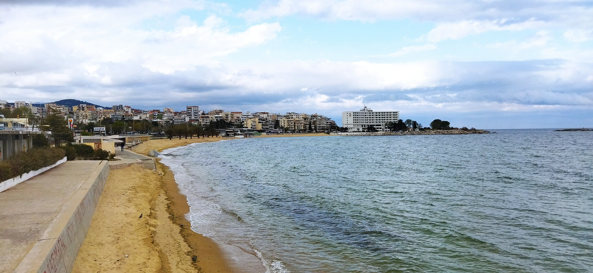
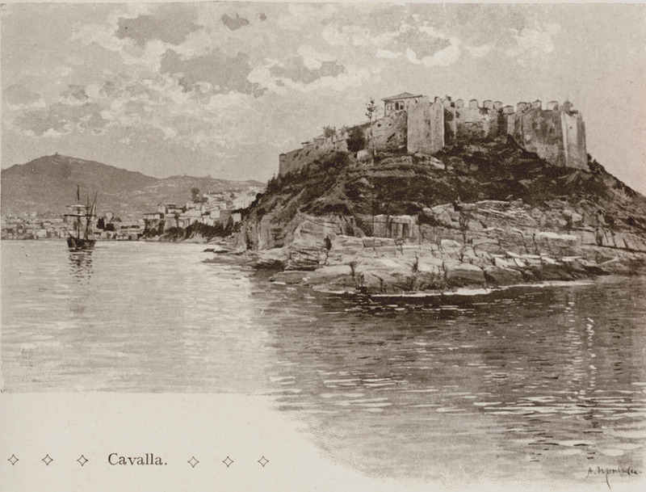
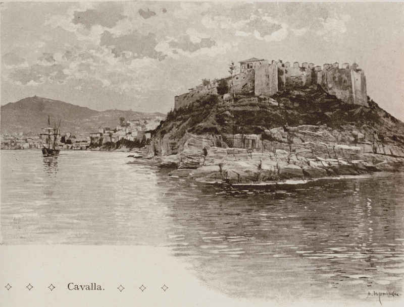

Η Καβάλα είναι πόλη της Μακεδονίας, έδρα του Δήμου Καβάλας και της Περιφερειακής Ενότητας Καβάλας (πρώην Νομός) της Περιφερείας Ανατολικής Μακεδονίας και Θράκης. Διαθέτει ένα από τα μεγαλύτερα και σημαντικά λιμάνια της Ελλάδας (Λ. Απόστολος Παύλος) συνδέοντας ανατολή με δύση καθώς επίσης και από τους σημαντικότερους εμπορικούς λιμένες της Μεσογείου (Φίλιππος Β'). Είναι η έδρα της Ιεράς Μητροπόλεως Φιλίππων, Νεαπόλεως και Θάσου ενώ αποτελεί και γενέτειρα του Μεχμέτ Αλή Πασά σημαντικού Οθωμανού αρχιστράτηγου και αντιβασιλέα της Αιγύπτου.
 

 


Η πόλη της Καβάλας έχει αλληλεπιδράσει χρονικά και ιστορικά με πολιτισμούς διατηρώντας την ιστορική ποικιλομορφία με τα διάφορα αξιοσημείωτα αξιοθέατα της. Στην πόλη αποβιβάστηκε το 49μ.Χ ο Απόστολος των Εθνών, Παύλος, για να κηρύξει για πρώτη φορά το μήνυμα του χριστιανισμού στην Ευρώπη. Η Καβάλα είναι η μοναδική περιοχή της Ελλάδας που εξορύσσει πετρέλαιο (Κοίτασμα του Πρίνου) ενώ επίσης διαθέτει τη μεγαλύτερη λιπασματοβιομηχανία (π.ΒΦΛ) της χώρας καθώς και μία από τις μεγαλύτερες ιχθυόσκαλες της Μεσογείου με εγχώρια και διεθνή διακίνηση εμπορευμάτων. Όντας το σημαντικότερο κέντρο επεξεργασίας και εμπορίας καπνού κυρίως 18ο με 20ο αιώνα έχει λάβει το προσωνύμιο ως "Η Μέκκα του Καπνού".
Η πόλη της Καβάλας αριθμεί 68.857 κατοίκους σύμφωνα με την απογραφή του 2021. Είναι κτισμένη αμφιθεατρικά στους πρόποδες του Όρους Σύμβολο ενώ η πρόσβαση προς την πόλη είναι εύκολη μέσω της Εγνατίας Οδού απέχει 650 χιλιόμετρα από την Αθήνα και 153 χιλιόμετρα από τη Θεσσαλονίκη. Ο αρχαιολογικός χώρος των Φιλίππων αποτελεί μοναδικό μνημείο Παγκόσμιας Πολιτιστικής Κληρονομιάς της UNESCO.
Η ιστορία της πόλης ξεκινά από τους Προϊστορικούς χρόνους και εκτείνεται μέχρι σήμερα. Οι αναφορές για αυτήν από τη μία χάνονται στις ομηρικές αφηγήσεις και από την άλλη καταγράφονται στα αρχεία της Αθηναϊκής Συμμαχίας. Από τη μία η πόλη έγινε παγκοσμίως γνωστή για την άφιξη των δημοκρατικών στρατευμάτων της Ρωμαϊκής Αυτοκρατορίας ενόψει της ιστορικής μάχης των Φιλίππων και από την άλλη για την άφιξη του Αποστόλου Παύλου το 49 μ.Χ., κάνοντας τη Νεάπολη (σημερινή Καβάλα) πρώτη ευρωπαϊκή πόλη που δέχτηκε τον Χριστιανισμό. Υπάρχει σήμερα το μνημείο του Αποστόλου Παύλου, έξω από τον Ιερό Ναό Αγίου Νικολάου στο κέντρο της Καβάλας, εις ανάμνηση της άφιξης του Αποστόλου Παύλου. Είναι διάσημη για τα μεγαλοπρεπή έργα Βυζαντινών και Τούρκων (όπως το Κάστρο, Καμάρες) όσο και για το ότι αποτέλεσε γενέτειρα του Μεχμέτ Αλί, αντιβασιλέα της Αιγύπτου. Παράλληλα η νεότερη ιστορία της πόλης παρουσιάζει εξίσου ενδιαφέρον, τόσο για την καπνεργασία και τις πρώτες απεργίες στα Βαλκάνια (1896) όσο και για την πλούσια βιομηχανική δραστηριότητα με κυρίαρχη αυτή του μαύρου χρυσού.